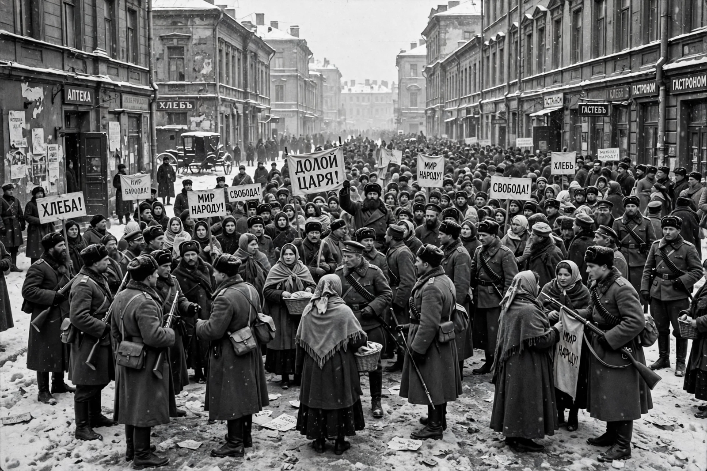

| February Revolution | |
|---|---|
| Date | 8–16 March 1917 (23 February – 3 March O.S.) |
| Location | Petrograd, Russian Empire |
| Result | Abdication of Nicholas II; end of the Romanov dynasty; formation of the Provisional Government and Petrograd Soviet (dual power) |

The February Revolution (Russian: Февральская революция) was the first of two revolutions which took place in Russia in 1917. It began with mass protests in Petrograd (now Saint Petersburg), the capital, over food shortages, war weariness and autocratic rule, and culminated in the abdication of Tsar Nicholas II, the collapse of the Imperial Government, and the end of the Romanov dynasty.
On International Women's Day, 8 March 1917 (23 February Old Style — hence the revolution's name), women textile workers led strikes and demonstrations demanding bread. The protests swelled as industrial workers joined; when soldiers of the Petrograd garrison mutinied rather than fire on the crowds, the regime collapsed. A Provisional Committee of the Duma formed a Provisional Government while workers and soldiers created the Petrograd Soviet, producing a situation of "dual power" (dvoyevlastiye).
Nicholas II abdicated on 15 March 1917. The liberal-led Provisional Government, first under Prince Georgy Lvov and later Alexander Kerensky, attempted to continue the war and postpone deep reforms, which set the stage for the October Revolution, in which the Bolsheviks seized power.
See also: October Revolution · Nicholas II · Russian Provisional Government · Petrograd Soviet